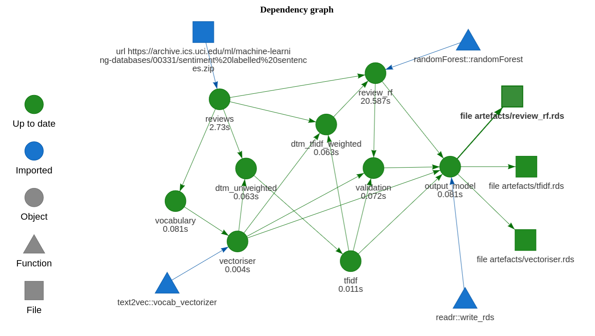
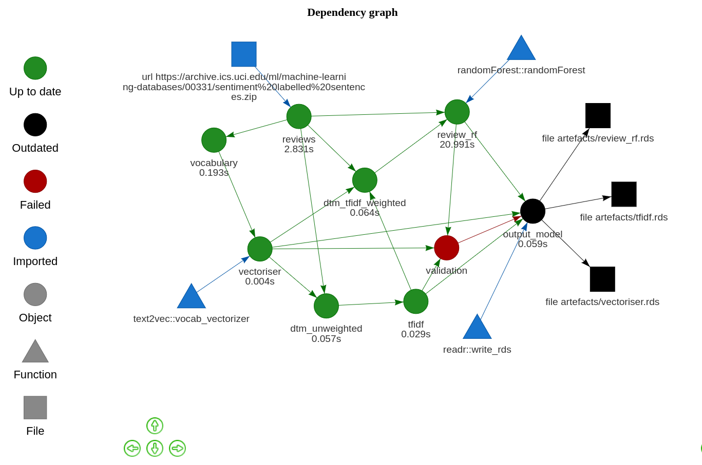

Drake is my new favourite R package.
Drake is a tool for orchestrating complicated workflows. You piece together a plan based on some high-level, abstract functions. These functions should be pure — they need to be defined by their inputs only, not relying on any predefined variables that aren’t in the function signature. Then, drake will take the steps in that plan and work out how to run it. Here’s how I’ve defined the plan above:
drake::drake_plan(
new_data = new_data_to_be_scored(),
tfidf = readr::read_rds(file_in("artefacts/tfidf.rds")),
vectoriser = readr::read_rds(file_in("artefacts/vectoriser.rds")),
review_rf = readr::read_rds(file_in("artefacts/review_rf.rds")),
predictions = sentiment(new_data$review,
random_forest = review_rf,
vectoriser = vectoriser,
tfidf = tfidf),
validation = validate_predictions(predictions),
submit_predictions = target(
submit_predictions(predictions),
trigger = trigger(condition = validation, mode = "blacklist")
)
)Drake is magic. I’m not going to go through the intricacies of this plan or how drake works, since the drake documentation is some of the best I’ve ever seen for an R package. But here are some reasons to use drake:
I came across this powerful package when I was researching best practices for R. I wanted to see if I could fit drake into some sort of standardised approach to training and implementing a machine learning model.
When it comes to code, there are three major components to a machine learning project:
These components are run independently of each other. EDA is a largely human task, and is usually only performed when the model is created or updated in some major way. The other two components need not operate together — if model retraining is expensive, or new training data is infrequently available, we might retrain a model on some monthly basis while scoring new data on a daily basis.
I pieced together a template that implements these three components using R-specific tools:
All three of these components might use similar functions. Typically we would place all of these functions in a directory (almost always called R/) and source them as needed. Here I want to try to combine these components into a custom R package.
R packages are the standard for complicated R projects. With packages, we gain access to the comprehensive R CMD CHECK, as well as testthat unit tests and roxygen2 documentation. I’m certainly not the first to combine drake with a package workflow, but I wanted to have a single repository that combines all elements of a machine learning project.
This template uses a simple random forest sentiment analysis model, based on labelled data available from the UCI machine learning repository. Drake takes care of the data caching for us. This means that we can, say, adjust the hyper-parameters of our model and rerun the training plan, and only the modelling step and onward will be rerun.
This template considers machine learning workflows intended to be executed in batch — for models that run as APIs, consider using plumber instead.
After cloning the repo, navigate to the directory in which the files are located. The easiest way to do this is to open the project in RStudio.
Model training and execution plans are generated by functions in the package. The package doesn’t actually need to be installed — we can use devtools::load_all() to simulate the installation. The model can be trained with:
devtools::load_all()
drake::make(model_training_plan())Plot the plan with drake::vis_drake_graph:

Model execution is run similarly:
devtools::load_all()
drake::make(model_execution_plan())Model artefacts — the random forest model, the vectoriser, and the tfidf weightings — are saved to and loaded from the artefacts directory. This is an arbitrary choice. We could just as easily use a different directory or remote storage.
I’ve simulated a production step with a new_data_to_be_scored function that returns a few reviews to be scored. Predictions are “submitted” through the submit_prediction() function. This function does nothing except sleep for 5 seconds. In practice we would submit model output wherever it needs to go — locally, a cloud service, etc. It’s hard to “productionise” a model when it’s just a toy.
The exploratory data analysis piece can be found in the inst/eda/ directory. It’s a standard R Markdown file, and can be compiled with knitr.
Both training and execution plans include a verification step. These are functions that — using the assertthat package — ensure certain basic facts about the model and its predictions are true. If any of these assertions is false, an error is returned.
validate_model <- function(random_forest, vectoriser, tfidf = NULL) {
model_sentiment <- function(x) sentiment(x, random_forest, vectoriser, tfidf)
oob <- random_forest$err.rate[random_forest$ntree, "OOB"] # out of bag error
assertthat::assert_that(model_sentiment("love") == "good")
assertthat::assert_that(model_sentiment("bad") == "bad")
assertthat::assert_that(oob < 0.4)
TRUE
}The model artefacts and predictions cannot be exported without passing this verification step. Their relevant drake targets are conditioned on the validation function returning TRUE:
output_model = drake::target(
{
dir.create("artefacts", showWarnings = FALSE)
readr::write_rds(vectoriser, file_out("artefacts/vectoriser.rds"))
readr::write_rds(tfidf, file_out("artefacts/tfidf.rds"))
readr::write_rds(review_rf, file_out("artefacts/review_rf.rds"))
},
trigger = drake::trigger(condition = validation, mode = "blacklist")
)For example, suppose I changed the assertion above to demand that my model must have an out-of-bag error of less than 0.01% before it can be exported. My model isn’t very good, however, so that step will error. The execution steps are dependent on that validation, and so they won’t be run.

The assertions I’ve included here are very basic. However, I think these steps of the plans are important and extensible. We could assert that a model:
We could also assert that predictions of new data:
If you’re interested, I’ve put the template up as a git repository, DrakeModelling.
This wasn’t my first attempt to template a machine learning workflow. Before I discovered drake I tried to structure a model as a package such that installing the package was the same as training the model. I did this by having a vignette for model training, which inserted artefacts into the package.
It’s a pretty fun way to train a model. Imagine installing a package and triggering a 12-hour model training process? But it’s not a very clean approach. Hadley said it was like “fixing the plane while flying it”, and he wasn’t wrong.
devtools::session_info()## ─ Session info ───────────────────────────────────────────────────────────────
## setting value
## version R version 4.1.0 (2021-05-18)
## os macOS Big Sur 11.3
## system aarch64, darwin20
## ui X11
## language (EN)
## collate en_AU.UTF-8
## ctype en_AU.UTF-8
## tz Australia/Melbourne
## date 2021-05-30
##
## ─ Packages ───────────────────────────────────────────────────────────────────
## package * version date lib source
## blogdown 1.3 2021-04-14 [1] CRAN (R 4.1.0)
## bookdown 0.22 2021-04-22 [1] CRAN (R 4.1.0)
## bslib 0.2.5.1 2021-05-18 [1] CRAN (R 4.1.0)
## cachem 1.0.4 2021-02-13 [1] CRAN (R 4.1.0)
## callr 3.7.0 2021-04-20 [1] CRAN (R 4.1.0)
## cli 2.5.0 2021-04-26 [1] CRAN (R 4.1.0)
## crayon 1.4.1 2021-02-08 [1] CRAN (R 4.1.0)
## desc 1.3.0 2021-03-05 [1] CRAN (R 4.1.0)
## devtools 2.4.0 2021-04-07 [1] CRAN (R 4.1.0)
## digest 0.6.27 2020-10-24 [1] CRAN (R 4.1.0)
## ellipsis 0.3.2 2021-04-29 [1] CRAN (R 4.1.0)
## evaluate 0.14 2019-05-28 [1] CRAN (R 4.1.0)
## fastmap 1.1.0 2021-01-25 [1] CRAN (R 4.1.0)
## fs 1.5.0 2020-07-31 [1] CRAN (R 4.1.0)
## glue 1.4.2 2020-08-27 [1] CRAN (R 4.1.0)
## htmltools 0.5.1.1 2021-01-22 [1] CRAN (R 4.1.0)
## jquerylib 0.1.4 2021-04-26 [1] CRAN (R 4.1.0)
## jsonlite 1.7.2 2020-12-09 [1] CRAN (R 4.1.0)
## knitr 1.33 2021-04-24 [1] CRAN (R 4.1.0)
## lifecycle 1.0.0 2021-02-15 [1] CRAN (R 4.1.0)
## magrittr 2.0.1 2020-11-17 [1] CRAN (R 4.1.0)
## memoise 2.0.0 2021-01-26 [1] CRAN (R 4.1.0)
## pkgbuild 1.2.0 2020-12-15 [1] CRAN (R 4.1.0)
## pkgload 1.2.1 2021-04-06 [1] CRAN (R 4.1.0)
## prettyunits 1.1.1 2020-01-24 [1] CRAN (R 4.1.0)
## processx 3.5.2 2021-04-30 [1] CRAN (R 4.1.0)
## ps 1.6.0 2021-02-28 [1] CRAN (R 4.1.0)
## purrr 0.3.4 2020-04-17 [1] CRAN (R 4.1.0)
## R6 2.5.0 2020-10-28 [1] CRAN (R 4.1.0)
## remotes 2.3.0 2021-04-01 [1] CRAN (R 4.1.0)
## rlang 0.4.11 2021-04-30 [1] CRAN (R 4.1.0)
## rmarkdown 2.8 2021-05-07 [1] CRAN (R 4.1.0)
## rprojroot 2.0.2 2020-11-15 [1] CRAN (R 4.1.0)
## sass 0.4.0 2021-05-12 [1] CRAN (R 4.1.0)
## sessioninfo 1.1.1 2018-11-05 [1] CRAN (R 4.1.0)
## stringi 1.6.1 2021-05-10 [1] CRAN (R 4.1.0)
## stringr 1.4.0 2019-02-10 [1] CRAN (R 4.1.0)
## testthat 3.0.2 2021-02-14 [1] CRAN (R 4.1.0)
## usethis 2.0.1 2021-02-10 [1] CRAN (R 4.1.0)
## withr 2.4.2 2021-04-18 [1] CRAN (R 4.1.0)
## xfun 0.22 2021-03-11 [1] CRAN (R 4.1.0)
## yaml 2.2.1 2020-02-01 [1] CRAN (R 4.1.0)
##
## [1] /Library/Frameworks/R.framework/Versions/4.1-arm64/Resources/library